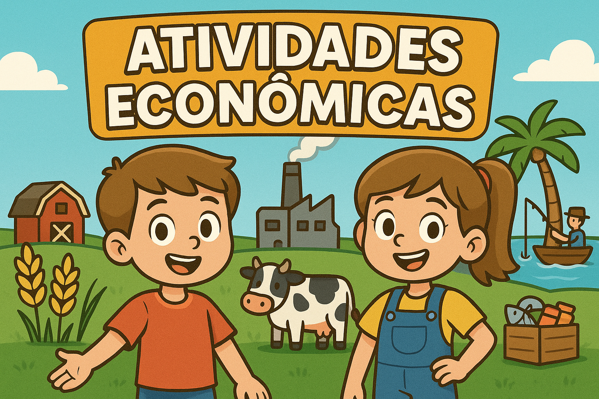

Bem-vindo ao Módulo das Atividades Econômicas!

Iniciar
Pontos: 0
|
❤️❤️❤️❤️❤️
Continuar
🎉 Parabéns! Você completou todas as perguntas!
Pontuação final:
pontos
🔄 Jogar Novamente
➡️ Próximo Módulo
Você perdeu! Que tal tentar novamente?
Tentar Novamente